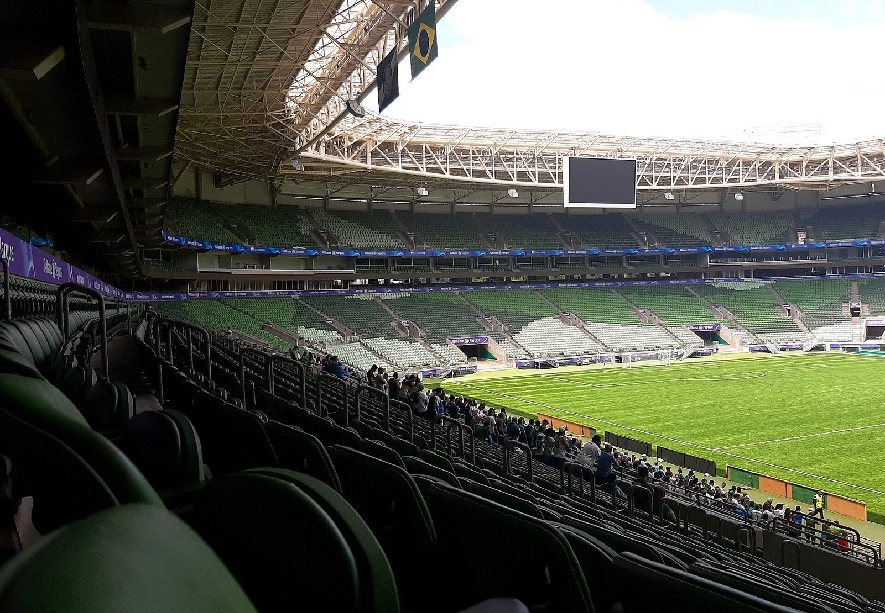

2.1 km · 8 min de carro
Allianz Parque
Casa do Palmeiras e uma das grandes arenas multipropósito da América Latina. Futebol de alto nível, shows internacionais e grandes eventos, perto o suficiente para o apito inicial, longe o bastante para o silêncio ao voltar para casa.